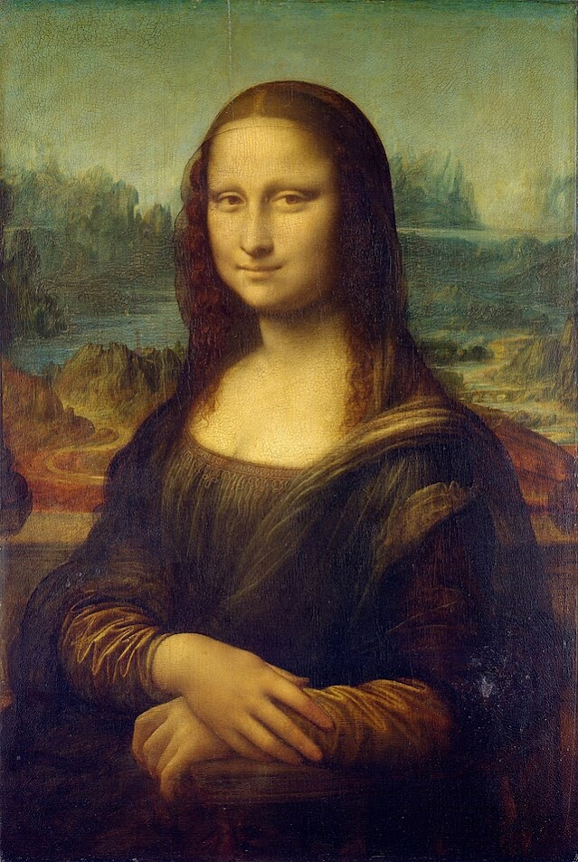

Dettagli su La Gioconda
- Artista: Leonardo da Vinci
- Anno: 1503–1506 circa
- Dimensioni: 77 cm × 53 cm
- Tecnica: Olio su tavola di legno
- Luogo: Museo del Louvre, Parigi, Francia
- Curiosità:
- Il sorriso enigmatico della Gioconda ha suscitato molti dibattiti e interpretazioni da secoli.
- Il paesaggio sfocato e l'uso della prospettiva contribuiscono a dare un effetto di profondità unica.
- La Gioconda è uno dei dipinti più visitati e riconosciuti al mondo, oltre ad essere un simbolo della cultura rinascimentale.
Torna al Museo Virtuale
